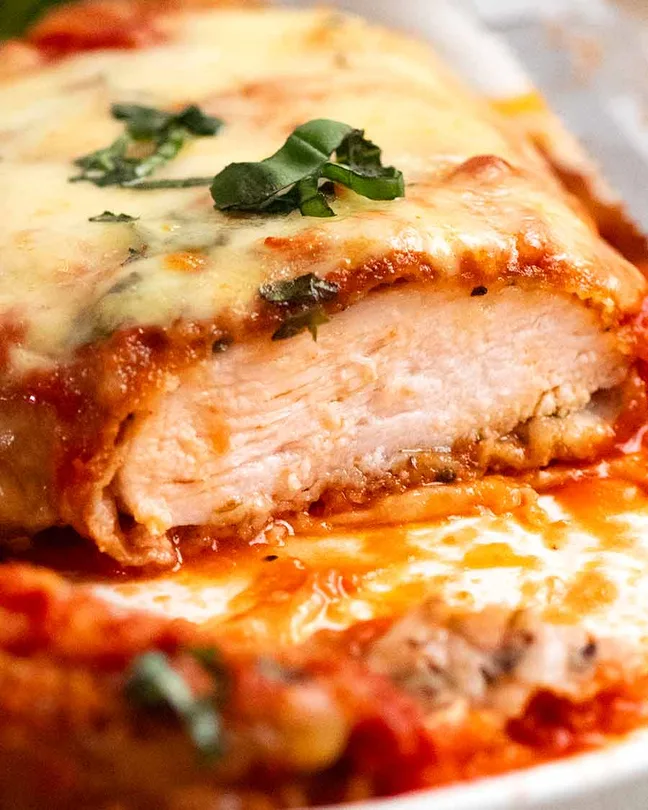

Description
This is the description
Ingredients
- Chicken (Breast are used in recipe, but choice is yours)
- Salt and Pepper
- Italian Mixed Herbs
- Tomato Passata (Also known as Tomato Puree)
- Garlic and Onion
- White wine and Chicken stock/broth
- Chilli flakes (red pepper flakes)
- Flour
- Garlic and Italian dried herbs
- Panko Breakcrumbs
- Parmesan
Steps
Part 1: Dry brine marinade for chicken
- Split chicken breast in half, forming thin slices of chicken.
- Sprinkle both sides with salt, pepper, and herbs.
- Set seasoned chicken to the side to brine for 30 minutes.
Part 2: Parmigiana Sauce
- Put a pot on the stove and add the tomato puree, garlic and
onion, Italian mixed herbs, White wine and chicken broth, and the
Chilli flakes.
- Let ingredients simmer, allowing sauce to thicken. The sauce should
thick with a saucy consistency.
Part 3: Crumbing!
- Place chicken breast into tub of flour
- Dip lightly floured chicken breast into egg batter
- Submerge chicken breast into breadcrumbs, piling them up
- Breast are now ready to fry! (or bake)
Part 4: Frying (or baking)
- Chicken Parmigiana does not require deep frying.
- If frying, a shallow fry will do the trick
- The chicken takes 4 minutes max to cook through until golden.
- If chicken is not thourougly cooked, it will continue to cook in the oven
- For baking, bake at 390F for 15 minutes.
Part 5: Smother and Bake!
- Top with sauce, covering about 80% of the surface (leaving
some crunchy exposed bits!). Optionally sprinke with fresh basil.
- Pile mounds of mozzarella on top, shredded melts more nicely than
slices. Then sprinkle with parmesan and drizzle with olive oil.
- Bake for 15 minutes, just enough for the cheese to melt and the
chicken gets some brown spots. Caution! Don't overbake as it will lead
to dry chicken.
- Finally, finish it off with a fresh sprinkle of basil and enjoy!
Recipe source from Recipetineats.
Home